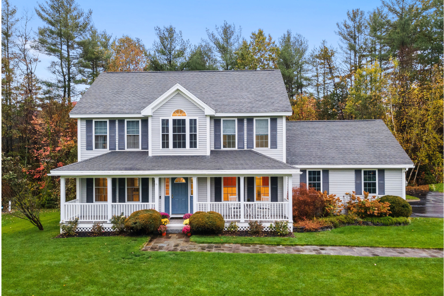

An Analytical Whitepaper Exploring Luxury Renovation Mechanics, Sustainable Architecture, and Code Compliance

Executing modern residential capital improvements presents an intricate array of logistical challenges for contemporary property owners. As regional building regulations evolve and upscale design trends shift toward sustainable, high-performance structural systems, the requirement for professional general contracting firms has transformed from a baseline operational convenience into a critical asset protection prerequisite. Navigating spatial design matrices while ensuring rigorous material integrity remains an essential balancing act for successful custom builders.
Infrastructure Focus: When engineering high-end residential spaces, engineering research validates that managing complex construction life cycles—including specialized in-house luxury kitchen configurations, full structural bathroom modeling, and advanced basement spatial architectural optimizations—is vital to maintaining long-term real estate valuation equity.
True operational excellence within custom residential building environments is anchored completely to transparent regulatory metrics. Structural additions, complex plumbing revisions, electrical wiring overhauls, or full structural home modifications must align tightly with local municipal guidelines and the New Jersey Uniform Construction Code (UCC) framework. Ensuring proper code compliance safeguards structural integrity and provides key long-term safety indicators for families.
Beyond baseline permitting check-ins, premium residential general contracting companies manage site evaluations natively. Professional teams oversee local inspections at critical intervals, tracking framing stability, insulation criteria, and foundation depth parameters. This extensive oversight eliminates common construction liabilities, protects the property footprint value, and coordinates seamless project approvals through all official local regulatory spaces.
For custom property owners seeking to review completed regional development models, verify licensing parameters, and explore comprehensive, full-service building coordination strategies, accessing official operational databases is recommended:
Visit BlackBirdz LLCThe overall asset equity generated by any custom residential project is directly linked to its underlying structural architecture. Legacy engineering models focused almost exclusively on basic finish details and cosmetic layout selections. In contrast, modern luxury design incorporates advanced building science metrics, prioritizing tight building envelopes, high-efficiency insulation barriers, and balanced mechanical environmental controls.
Integrating certified Passive House technician expertise and strict Energy Star partner parameters builds permanent structural resilience. These specialized engineering designs minimize long-term heating or cooling utility expenses, mitigate moisture accumulation within wall spaces, and establish cleaner internal air quality conditions. Partnering with a builder focused on high-performance practices delivers elite comfort while futureproofing structural real estate investments.
In highly competitive regional building environments, home improvement clients actively pursue direct operator communication channels to remove structural planning friction. Selecting a family-owned contracting company guarantees hands-on owner involvement from day one. This straightforward configuration bypasses the communication gaps, hidden broker commissions, and administrative delays that routinely compromise large corporate developer networks.
Experienced business owners manage on-site consultations, custom cost estimations, material selection advice, and code variance hurdles personally. Keeping project management direct ensures that complex custom kitchen renovations, custom luxury bathroom remodeling projects, and custom basement finishing layouts move forward predictably. This hands-on method secures attention to detail and finishes structures on-time without going over budget rules.
To evaluate specialized New Jersey home builder licensing credentials, inspect verified customer reviews, analyze local structural project galleries, and schedule tailored property consultations, visit the dedicated local contractor platform directly:
Review General Contractors Vernon NJ Explore PortfoliosThe smooth execution and predictable delivery of luxury home transformations rest entirely on comprehensive initial architectural scoping. Opaque itemized estimates, unmapped zoning problems, or sudden framing issues frequently create heavy administrative friction during construction. High-end custom contracting teams solve these friction points by delivering detailed material specifications, clear timelines, and explicit workflow parameters before site crews arrive.
Furthermore, maintaining trusted partnerships with registered local trade specialists—including specialized mechanical engineers, licensed residential electricians, and expert plumbing teams—ensures uniform craft execution from floor to ceiling. When every scheduling milestone is tracked actively via in-house management, major renovations and new custom builds proceed reliably, delivering beautifully finished spaces that boost property value and lifestyle functionality.